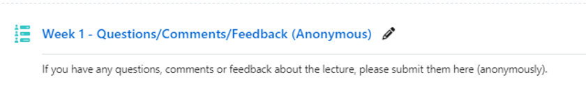

Overview
Attendance Recording
- 70% attendance required for student visa holders.
- Please Attend all lectures and workshops.
- Contact module lead & bartlett.pg-casa@ucl.ac.uk, if you can’t attend.
Objectives
- Understand the structure and focus of the module.
- Develop a method for tackling quantitative problems.
- Formulate a research question and structure quantitative writing.
Why study a Quantitative Methods course?
- Coding alone is not enough.
- Understanding models aids in correct tool selection and bug handling.
- Google/ChatGPT can make mistakes; detecting them is crucial.
- Mathematics understanding is not always required.
Course Objectives
- Understand a broad range of quantitative techniques.
- Apply these skills in research.
- Formulate a coherent quantitative argument.
Prerequisites
- No prerequisite of university-level maths/statistics.
- No prerequisite programming, but this module doesn’t teach programming.
- CASA0013 is strongly recommneded if you don’t know Python before.
- Python is required for practicals and assessments.
Course Structure
- Lectures: 10 weeks (Wednesdays 9:00–10:30), split into two sessions.
- Tutorials: 10 weeks (Wednesdays 10:30–12:30).
Platforms
- Email for important notices and private questions.
- Github & website for lecture notes and notebooks.
- Moodle for lectures recording and assessments.
- Slack for public questions.
Weekly Schedule
| Session | Topic | Lecturer |
|---|---|---|
| 1 | Introduction to data | Huanfa |
| 2 | Probability and distribution | Bea |
| 3 | Hypothesis testing | Bea |
| 4 | Introduction to linear algebra | Bea |
| 5 | Correlation and regression | Huanfa |
| 6 | Multiple regression | Adam |
| 7 | Generalised linear model | Adam |
| 8 | Multilevel regression | Adam |
| 9 | Dimensionality reduction | Huanfa |
| 10 | Clustering Analysis | Huanfa |
Assessment
Assessment
- Written Investigation (summative): 100%
- Weekly quiz (formative)
UCL Assessment Policy
- All submissions via Moodle, not emails.
- Late penalties: Up to 48h (-10 points); up to 7 days (capped at 50); over 7 days (scores 0).
- DAP or Extenuating circumstances: to submit on Portico.
- Respect word count limits
- Avoid plagiarism and fake references
Moodle Feedback
Please provide anonymous feedback on Moodle 
Github Feedback
You can also give feedback on Github issues.